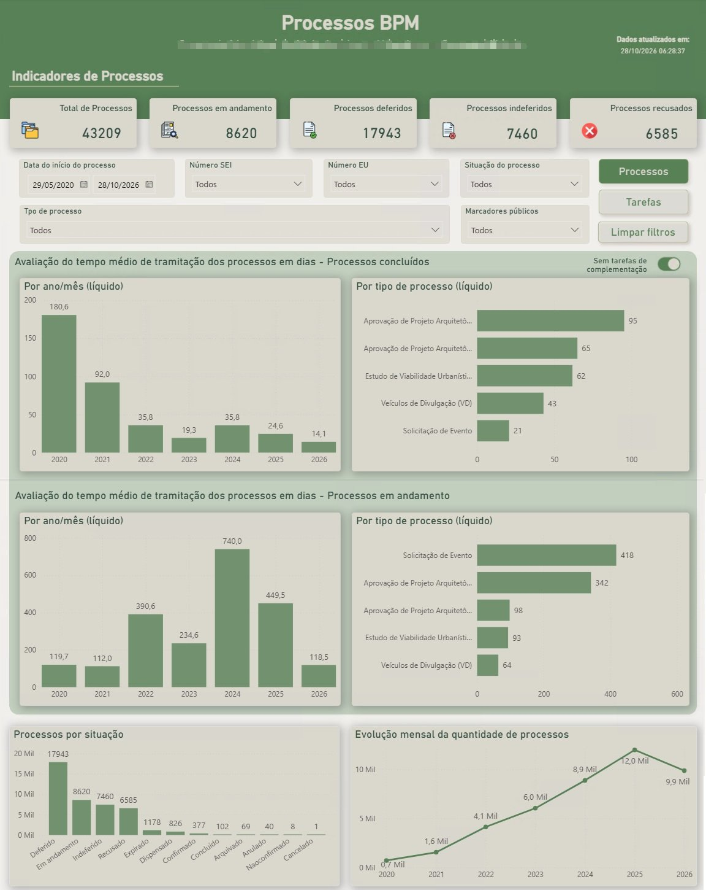
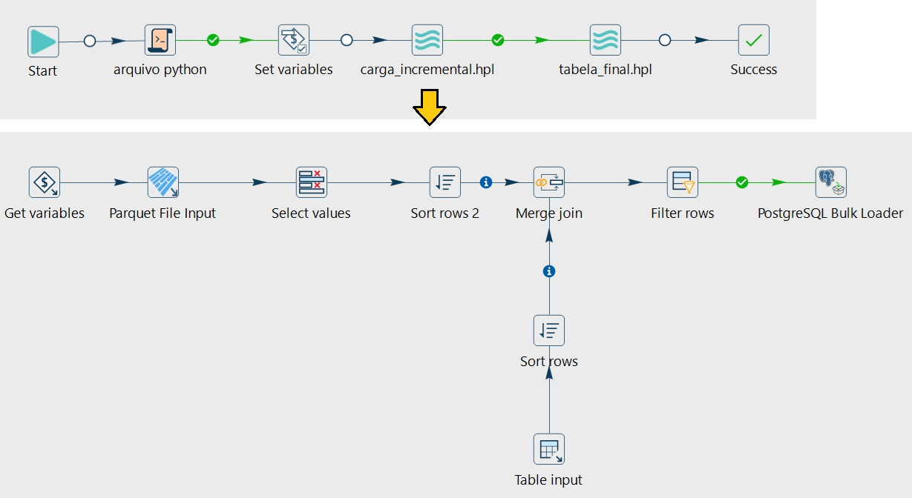

Ponta a ponta · ETL + DW + Power BI
Indicadores de Processos BPM
- Objetivo
- Dar ao nível gerencial uma visão consolidada da tramitação de processos administrativos de licenciamento: volume, situação e tempo de resposta ao cidadão.
- O que o painel mostra
- Mais de 43 mil processos desde 2020, em 18 tipos: totais por situação, tempo médio de tramitação (concluídos e em andamento) por ano e por tipo, evolução mensal da demanda e detalhamento por processo.
- Destaques técnicos
- Workflow no Apache Hop que executa um script Python de extração, define variáveis e roda a carga incremental: lê arquivos Parquet, compara com a tabela destino (merge join) e grava apenas os registros novos via PostgreSQL Bulk Loader. No painel, cálculo de tempo bruto e líquido (opção de desconsiderar tarefas de complementação), páginas de processos e de tarefas. Projeto versionado em Git e executado diariamente pelo Jenkins.